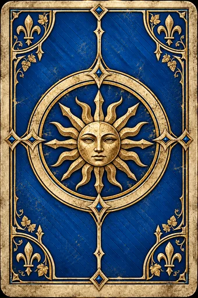

Туссент
45 из 45 лицевых карт · 4 лидера · готовая рубашка
Единая основа. Иллюстрации, имена, цитаты, цифры и иконки собраны отдельными слоями. Нажмите на карту, чтобы рассмотреть её.
Игровой состав по текущим правилам: 38 отрядов, 10 особых карт, один выбранный лидер. Копии указаны под картами; это одна сущность с одним артом.
Новые реплики написаны для этого проекта — это не цитаты из игры. Новые значки расширения отмечены в отчёте. Одобрено: карты подключены к игре. Это художественная адаптация, а не подтверждённая пиксельная копия.
Лидеры
Отряды фракции
Нейтральные карты
Особые карты
Готовая рубашка использована без изменений. Общие существующие карты сохранены из предоставленного набора. Ни одна подпись способности не заменяет литературную цитату.